I am an AR algorithm Engineer who was born in Taiwan and I received my BEng of Electronic Engineering degree in The Chinese University of Hong Kong (CUHK) in 2016.
Computer Vision/Image Processing/Vitual Reality/Augmented Reality/Video Processing
Programming: C/C++, OpenCV, OpenGL, Matlab, Python, Unreal Engine, GNU Radio, LTSpice, PSpice, Keil C, Verilog, CircuitCAM, PowerPCB
Language: Mandarin Chinese (native); English (fluent); Cantonese (fluent); Taiwanese (fluent); Spanish (basic)
Abstract: Among the techniques of stereo vision, people have paid more attention to a binocular stereo vision which is based on processing two images. With OpenCV in C++, we can practically do lots of depth analysis, or even generate a 3D depth point cloud, by calling the function in the library. In this project, I tried to generate my depth map, which only included several feature points generated by ORB detector. The produced depth map could be utilized in indoor positioning in the future.
Theoretically, the stereo cameras may be any kind of cameras. I had used GoPro 4 Hero (GoPros) as my stereo cameras, but the result with GoPro has the fish-eye effect so that I use the “remove fisheye function” provided in GoPro Studio for every testing images. The whole experiment steps are (1) stereo photography, (2) stereo calibration, (3) feature Points detection and matching, (4) rectification and (5) depth analysis. All of the details about these steps would be discuss in the following paragraphs.
Stereo Photography: To simplify the experiment, I put two GoPro on the same axis so that we just need to consider a single-direction translation factor. The camera distance between two GoPro is adjustable. Yet, if the camera distance is too short, the sensitivity of depth change is worse. On the other hand, if the camera distance is too large, the overlap area of two picture is too small to analyze. Hence, we have to set a proper camera distance. Here, I assume that most of the object is located at around 3.00 meter away from the stereo cameras system, and the camera distance is 0.2 meter.
Fig. 1. The prototype of the stereo cameras system
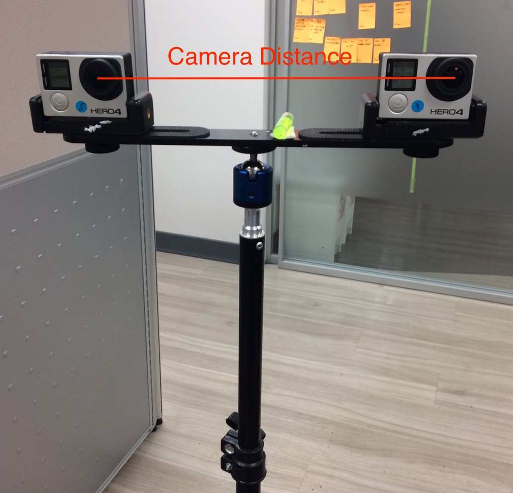
Fig. 2. A pair of stereo images took with our stereo camera systems
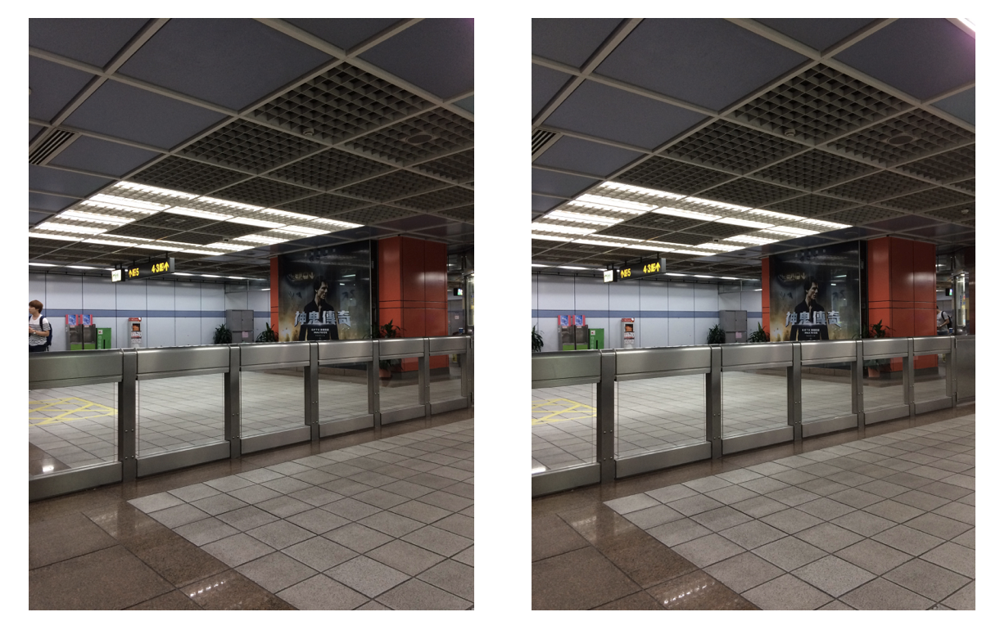
Stereo Calibration: In OpenCV, we used to do camera calibration by taking several photos with a chessboard in the different angle of view. Here, I use the calibration information which I did in another program. After importing the calibration information, including camera matrix and distortion coefficient, I do the stereo calibration with two stereo images with chessboard by the stereo cameras system so that we can get the rotation matrix, translation matrix, fundamental matrix.
The rotation matrix and the translation matrix is for do rectification. If we would like to use the function provided by OpenCV, the fundamental matrix is necessary. The fundamental matrix contains information about the translation and rotation that relate the two cameras in physical space. Because that we would like to generate our own stereo calibration result, I didn’t output the fundamental matrix in this function. Theoretically, in my stereo cameras system, the rotation matrix should be a 3*3 unit matrix and the translation matrix should be [x, 0, 0] (x and camera distance are in correct proportion). However, to prevent any error, we still have better do the stereo calibration to get these matrices.
Fig. 3. Two stereo images with chessboard (the camera distance is 0.2 meter)
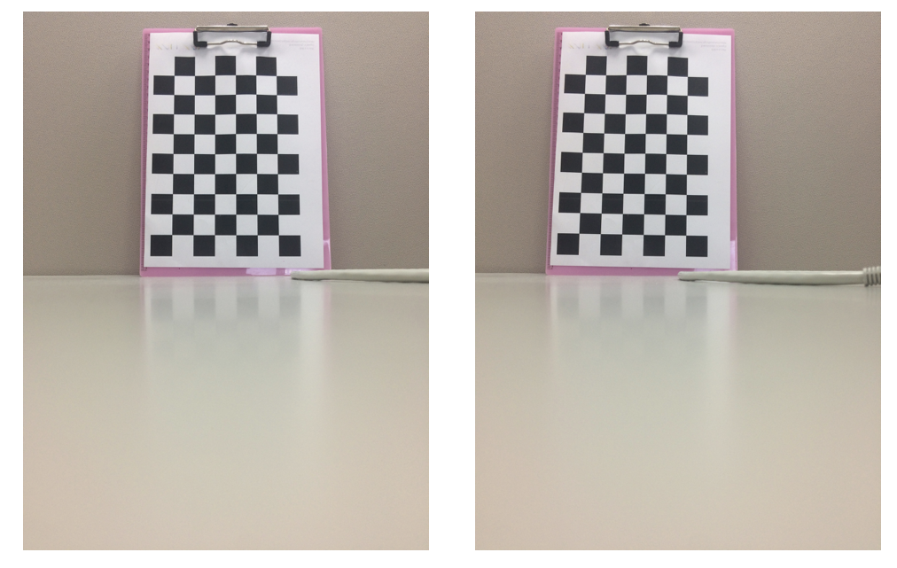
Feature Points Detection and Matching: There are lots of different method for doing feature points detection. In this project, I chose ORB algorithm because that I planned to develop an App to achieve the objective of this project in the future and ORB worked efficiently on most of the mobile devices. At first, I detect 2,000 feature points for each stereo image. Then, the next step is to do feature matching. In the project, I use Bruce-Force matching and get about 950 matching feature points (see Figure 5). To make our result more accurate, we use the anti-duplicate filter to eliminate those duplicate feature points and the distance filter to erase those feature points which larger than the Hamming distance. The final matching result contains about 450 feature points. In fact, even we have used two filters, some of the final matching feature points still cannot be used. We will delete those bad matching feature points after doing rectified adjustment.
Fig. 4. Initial feature points matching result
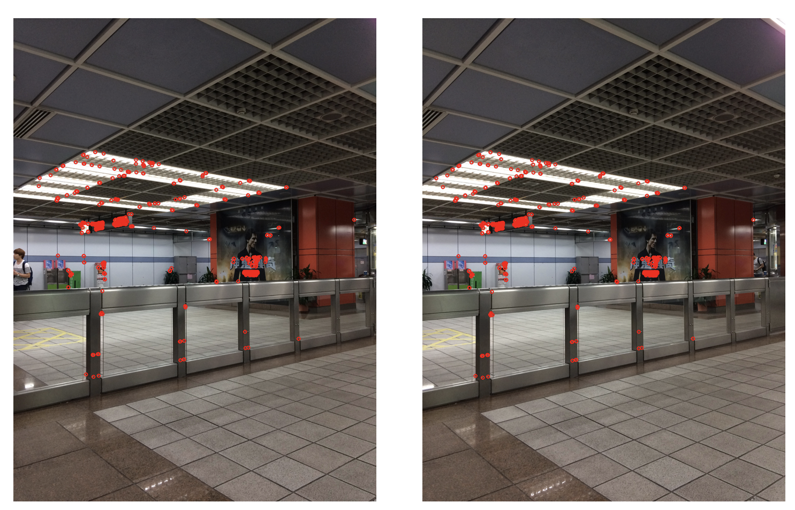
Fig. 5. Filtered feature points matching result
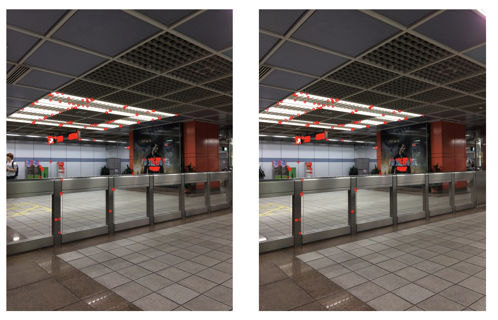
Rectification: To analyze the depth information, we should make sure that each pair of the matching feature points is located on the same horizontal line. Even though the cameras only do translation in the stereo cameras system, some of the pairs of matching feature points should be eliminated due to the different disparity and inevitable errors in photography. To adjust more feature points to the same horizontal height, we have to do rectification. With the translation matrix and the rotation matrix got in the previous step, we get a rectified undistorted result. After this process, the program will remove the feature points which have the height difference more than 25 pixels between left stereo image and right stereo image. Eventually, the remaining amount of good feature points is about 250 units. In the next step, we will estimate the world coordinate of these good feature points.
Fig. 6. Final feature points matching result
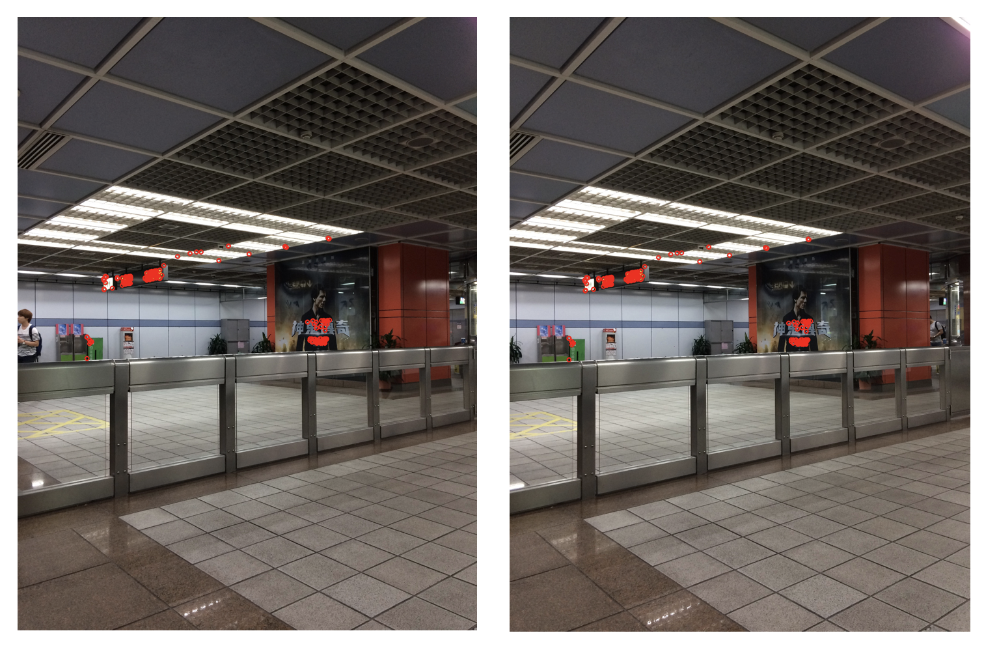
Depth Analysis: With lots of preparation, we finally can do the depth analysis for those feature points. The figure above demonstrates the idea of my idea. The baseline B is same as the camera distance in my stereo cameras system. O and O’ represent the position of the left camera and right camera (in the system, I consider the left one as the reference camera and the left one as the target camera). If we re-project the two stereo images from the pixel coordinate (2D) into the world coordinate (3D) on a specific distance f (I called the two re-projected image as “virtual posters”), we can get the real-world coordinate of point X by finding the crossover point of line Ox and line Ox’. If line OO’ and line xx’ are totally parallel, then we can calculate the value of z by using the similar triangles characteristic (that is the reason that why we have to do rectification and remove the too large height difference matching result).
Fig. 7. The depth analysis
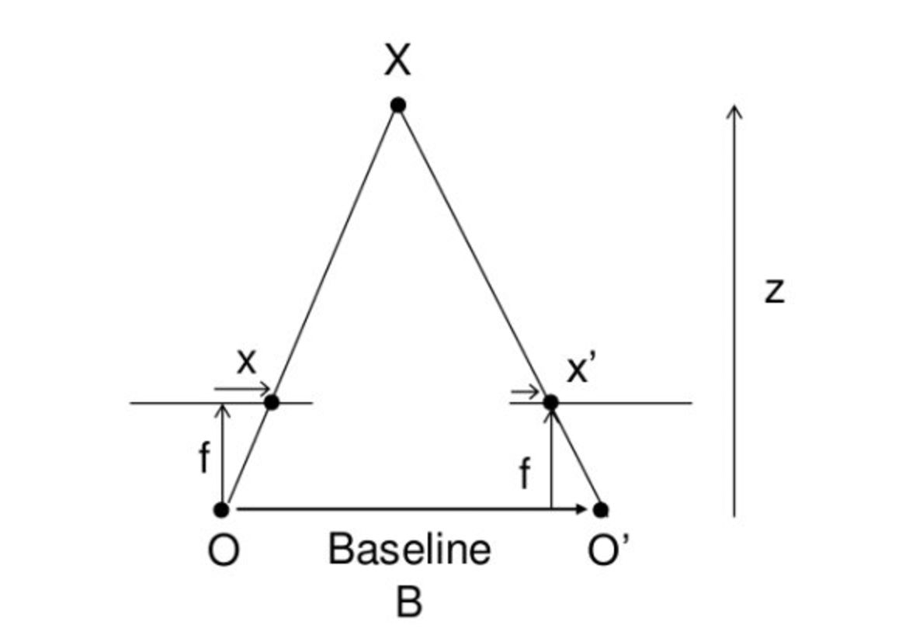
Fig. 8. 3D real world coordinate (top-view)
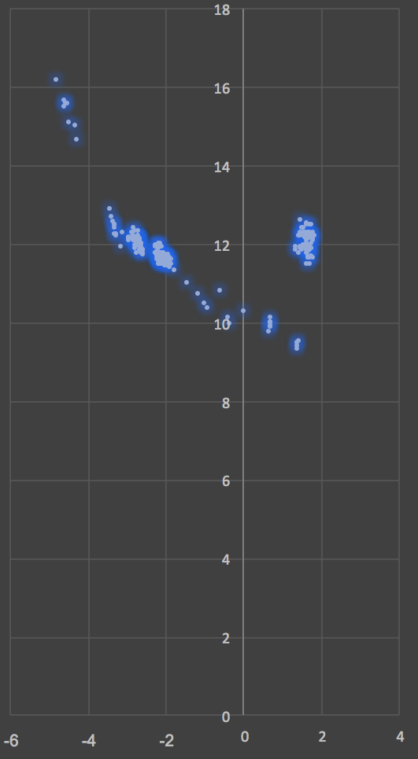
Fig. 9. 3D real world coordinate (side-view)
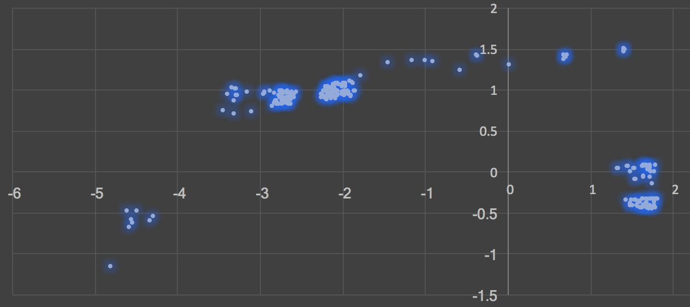
Fig. 10. 3D real world coordinate (30-degree-top-view)
Abstract: In this project, I unwarp the panoramic image with OpenCV and transfer it into the perspective-view image. With the program, the distortion problem in 2-D panorama image could be removed. I only released few of my source code due to the confidentiality agreement from my company. To read the full version report, please check the link at the bottom. The step of unwarping includes (1) segment; (2) unwarp; (3) anti-aliasing. In the following parts, I will briefly introduce the concepts of them and present the results.
Segment: In most of the parts in a panoramic image, especially the top 20% and the bottom 20% of image distort extremely, taken by a 360-degree camera. Fortunately, the recorded scene of these the most distorted parts usually include the information of floor and ceiling. Therefore, it can be cropped out directly. To simplify and eliminate the CPU’s usage rate, the sample image has been cropped 40% from the top and 40% from the bottom, which means that only 20% of the image in the middle would be reserved.
Fig. 1. The original panorama image
 Fig. 2. The cropped panorama image
Fig. 2. The cropped panorama image
 Fig. 3. One of the segmented panorama images
Fig. 3. One of the segmented panorama images
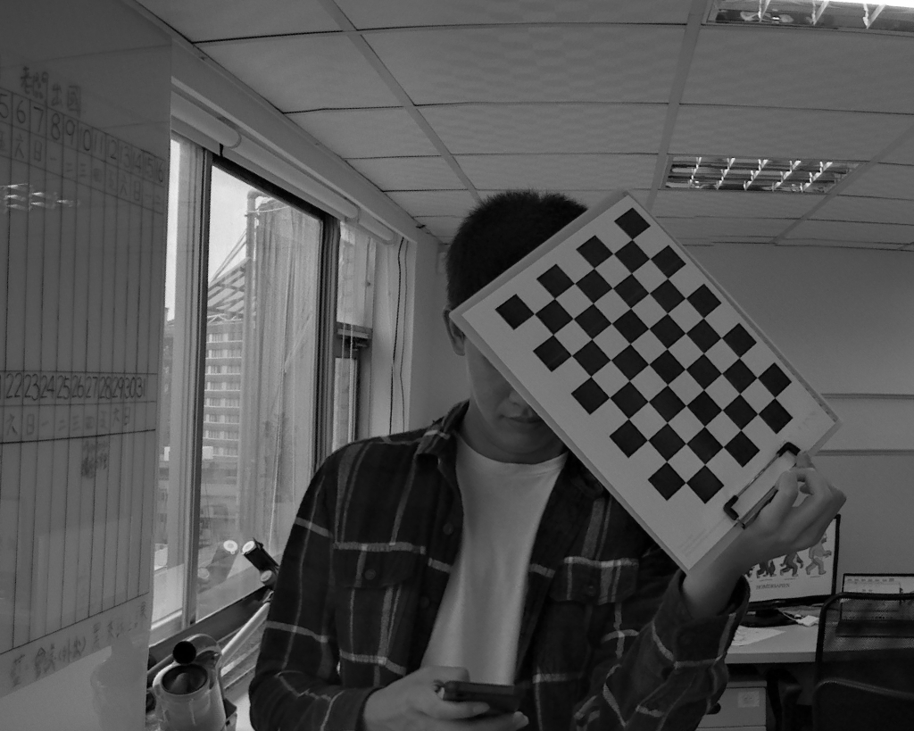
Unwarp: With the converted formula, we assigned the segmented panorama image to corresponding position pixel by pixel. In the result image, the curved situation of ceiling area has been modified, but there are lots of “holes” (black line) in the image.
Fig. 4. The unwarped panorama segment
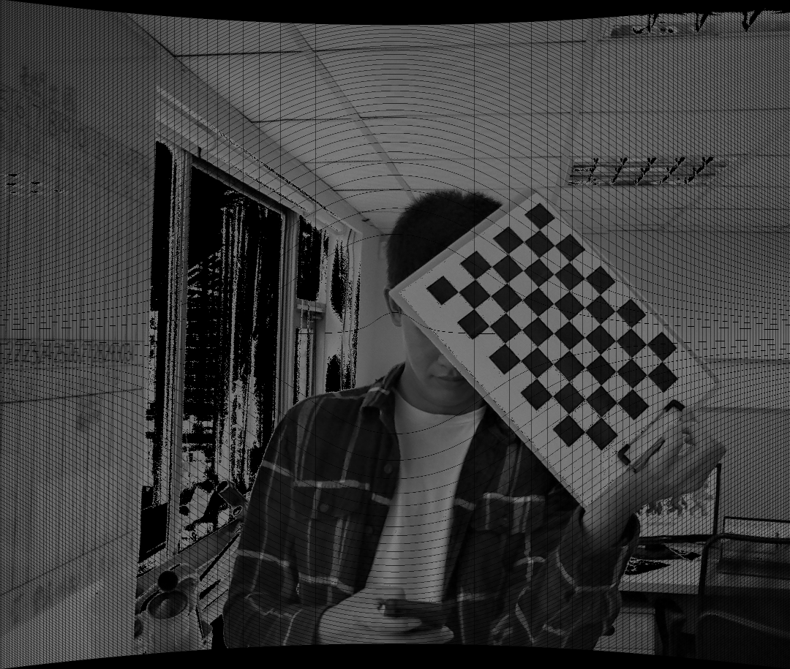
Anti-aliasing: We do the roughly estimation to do image padding for the hole area. Once a hole is detected in the image, we analysis the all eight neighbor pixels one by one . Then, we calculate the mean color value of these eight neighbor pixels.
Fig. 5. The final result image
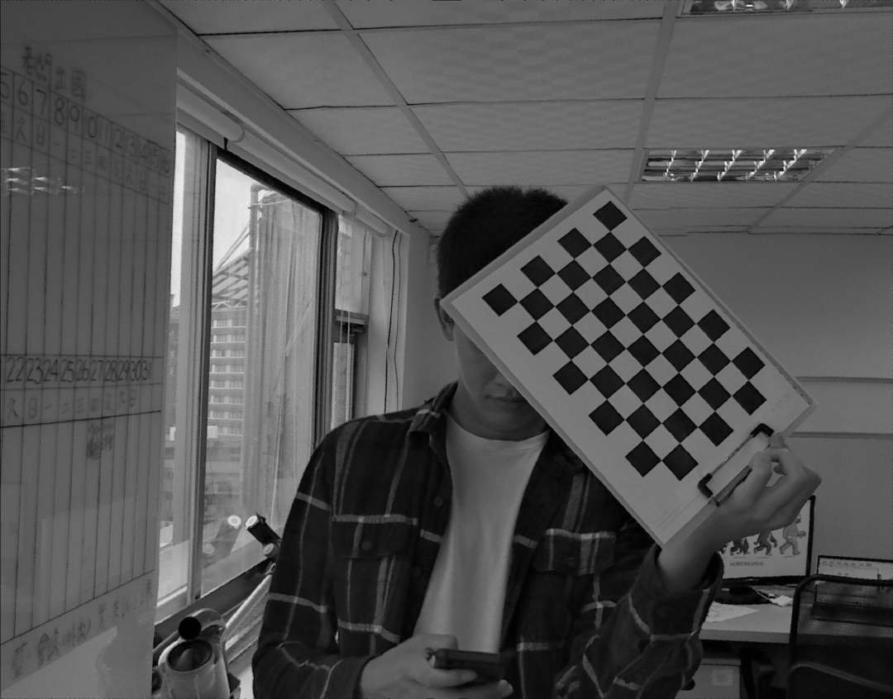
Introduction: I started to do these projects while I was in the Taiwan military service. One of the Master Sergeant invited me to do some foreign exchange projects for his personal exchange market trader with remuneration (USD650 ~ 850/each project). At first, I had no idea how to get the real-time exchage market informationl. Therefore, I used image recognition with Python to get the real-time exchange price.
This video below shows the result of reading the real-time gold price in four-time speed.
Few weeks later, I learned that I could use a programmable editor, MQL4, to do these projects. All of the programs can be ran on a popular exchange market program, MT4. In the following paragraphes, I would show what I had done so far.
Close All of The Trading Items with One Button: MetaTrader didn't provide the function for closing up all of the trading items immediately. The function built with several loop provided the good solution for every MT4 user. The video below shows the result of the function.
Close Assigned Type of The Trading Items with One Button: This is the updated version of the previous function. In the function, MT4 users could close the assigned trading item they expected. The following video shows the result of the function.
Drop-more-buy-more Strategy: In this function, if the price of the specific item of exchange drops down to the predicted price, it would auto-trading multiple amounts of that item. Once the price reaches our goal, the item would be close. The following video shows the result of the function.
(To be continued...)
Abstract: As an engineer who works in a VR startup company, it's pretty easy for me to get and test many different kinds of VR products. HTC Vive is one of the most popular VR products in the world. The whole system includes a headset, a pair of wireless controllers, a pair of lighthouses and a linkbox. I tried to do some research to understand how the whole system works, especially the communication protocol part. All of the research were done during my after hours.
About HTC Vive: The whole system can be separated into different parts. The headset (N) should be connected with PC through the linkbox (E) with HDMI line and USB line. The pair of controllers (O) is wireless. Once the system is set up, we can connect the controllers with Vive. Furthermore, the position information of controllers is related to the pair of lighthouses (A). Yet, the lighthouses are independent and don't connect with Vive or PC. Besides, the whole system can be drive on SteamVR.
Motivation: When my colleagues and I were developing a VR game with HTC Vive, we set up three sets of Vive. Intuitively, for three sets of Vive, six lighthouses are required for three headsets. However, there are so many interferences for the controllers after we set up six lighthouse in our office. When three pairs of controllers were working together, the position couldn't be detected accurately. After searching the solution on Internet, we figured out that we only need to equip one pair of lighthouses. And it worked! However, it also inspired our curiosities for understanding how the whole Vive system works.
Background: To talk about the most common protocol for short distance communication, Bluetooth is undoubtedly the best option. Therefore, I supposed that the controllers connect with PC by Bluretooth. However, several of evidences shown that our hypothesis was incorrect.
First of all, I used the mobile App "Lightblue explorer" to detect the bluetooth devices and the App only detect the lighthouses Bluetooth signal (2402 - 2480 MHz, 40 channels, 2 MHz per channel, GFSK). However, we couldn't find any Bluetooth connection between the lighthouses with Vive or PC. Then, we supposed that the pair of lighthouses makes the connection by Bluetooth.
Secondly, based on the knowledge of Bluetooth, I knew that it works in 2.4GHz with many channels. With the adaptive frequency hopping design, the security level of Bluetooth is high. Nevertheless, the transmission of Bluetooth is not rigid. It sends the data in different channels and different transmission speed. With that, the Bluetooth receiver spends few seconds to decode the data. Yet, the position information of controllers should be transmitted as soon as possible. The basic fps requirement of Vive is 60, which means that the controller should send at least 60 real-time position data in a second. Bluetooth doesn't satisfy this requirement. Besides, the security issue of Vive controllers is not critical. It's necessary to encrypt the data of controller's position.
With the evidence presented above, we may safely arrive at the conclusion that the protocol of HTC Vive controllers is not Bluetooth. Here, I assumed that HTC made their own protocol. I read the report on Federal Communications Commission (FCC), it shows that the transmission of the controller is at 2.4 GHz with 79 channels (2402 - 2480 MHz, 1 MHz per channel, FSK). Becuase of the confidentiality agreement, we couldn't get more information.
Apart from the protocol of controllers, I also figured out some special things. In Setting of SteamVR, there is a function called "Enable Bluetooth communication". According to the description, base stations can be wirelessly power managed and updated. Once I clicked the button, the Lightblue explorer detected the Bluetooth (Bluetooth 4.1, 2402 - 2480 MHz, 79 channels, 1 or 2 MHz per channel, GFSK + PI/4DQPSK + 8DPSK) from linkbox. It made me feel confused that why the Vive developers designed the linkbox. I tried to connect the headset to the PC without linkbox, but the SteamVR couldn't drive the headset. As a result, I confirmed that there is a driver in the linkbox and I suspected that the bluetooth in linkbox would be improved in the future version of Vive, to make Vive connects with the mobile phone (The main product of HTC is their mobile phone).
Research: There are three parts in our research, including the Bluetooth update, Lighthouse research and the protocol of controllers. All of the progress will be shown in the following paragraphs. Nevertheless, I haven't finished the research yet. And due to I am waiting for the military service, I temporarily leave my company. Thus, the research are suspended.
1) Bluetooth Update: SteamVR showed the notification for asking us updated our lighthouses in several times. However, we still could not update them with Bluetooth so that we had to connect them with PC by USB line to update the firmware. According to the HTC official website, the developer edition could not update lighthouse with Bluetooth while the consumer edition could do so. After the lighthouses updated, there are lots of new dll file shown.
2) About the Lighthouse: The lighthouses emit the IR with 850 nm. There are several IR sensors on the controllers. After the calculation of the distance of between two lighthouses, a position information will be generated and the data will be sent to the headset with HTC specific protocol.
3) The Communication Protocol of Controllers: To get the transmission data of controllers, we bought the HackRF. This powerful machine assists us to collect the data in specific frequency (the record range is 10 Mhz). To make the experiment accurately and comprehensively, I designed a box covered with aluminum foil so that other interference signal would be removed. After collecting the data. I could analyze it with GNU Radio on Ubuntu.
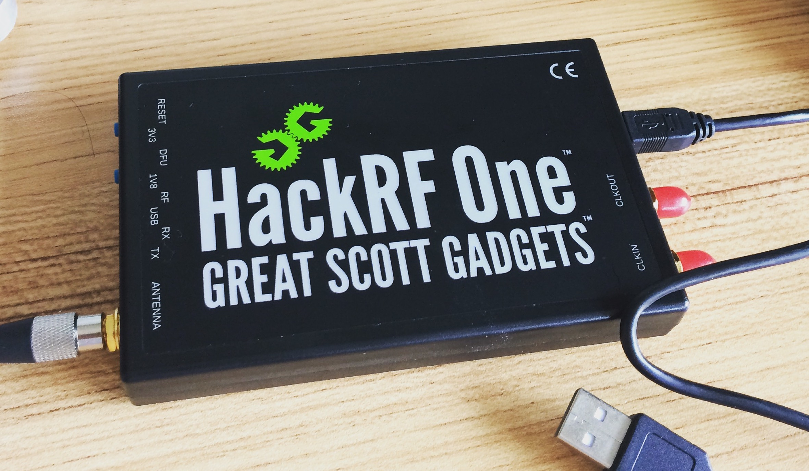
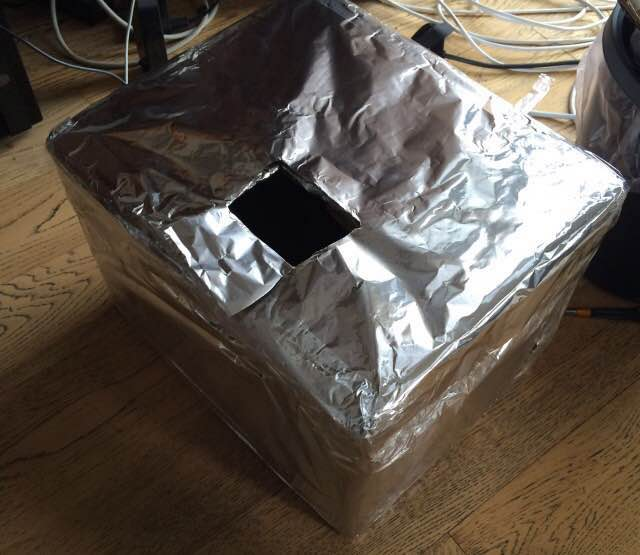
I fixed a controller on the table and tried to record the data channel by channel. However, I didn't find anything special. The storage data looks no regular pattern. In addition, the data is quite large. If I record 10 channels in 10 seconds, the size of the result is larger than 2 GB. Fortunately, after transfer the data from bin file to meta file, we noticed that they are some repeated content in every 80 MB. The Video below is the plot result of 2.410 GHz with 10 channels.
(To be continued...)
Supervisor: Prof. K. N. Ngan, Prof. S. N. Li
Introduction: This is my Final Year Project in The Chinese University of Hong Kong. I finished the project in Image and Video Processing Lab, CUHK.
Abstract: The main objective of this project is to develop the software, which can do the head tracking and combine the 3D model with head tracking result on the screen simultaneously. The first goal of project is to develop the software, which has the function of “ head motion capture”. It means that the software can track facial features position no matter how the subject moves after the frames of video sequence being taken by the RGBD (red-green-blue-depth) camera. Here, we use Microsoft Kinect as the camera, detects the location of objective’s face. The other part of the project is to control the 3D model coordinate and direction vector, according to the direction vector of head (the direction vector of 3D model and head should be same). Finally, we will combine the 3D model and the head-tracking program to generate the result, which shows the subject wearing the 3D model (such as mask, glasses, etc.) on the head.
Introduction: This is the term project for course "Digital Signal Processing and Applications", advised by Prof. Tan Lee, in The Chinese University of Hong Kong.
Abstract: In this project, I used MATLAB functions to compute and ploted the spectrogram of a clean speech signal and its noise-corrupted version. I also designed FIR filters to remove the noise while preserving speech part of the noisy signal.
Introduction: This is the term project for graduate school course "Video Coding Technology", advised by Prof. K. N. Ngan, in The Chinese University of Hong Kong.
Abstract: Hybrid video coding is an advanced coding technique which is derived from both predictive coding and transform coding. Hybrid video coding framework is commonly used in modern video coding standards, e.g., H.26x, MPEG2/4, AVS, HEVC etc.
In this project, I implemented a simplified hybrid video codec with coding tools like intra prediction, inter prediction (with motion estimation), 4 × 4 integer DCT transform, quan- tization, etc. The impact of intra prediction and motion estimation on the codec’s performance was investigated.
Competition: International Genetically-Engineered Machine Competition
Award: Silver Medal in Asia Jamboree
Introduction: In 2013, 13 teammates and I represented CUHK to join iGEM. As a modeling group leader, I focused on the modeling work to simulate the effect of changing the structure of the voltage switch on the overall reaction rate. Moreover, I presented the team’s proposal to a dozen companies in Hong Kong and Taiwan and successfully fundraised $8,500USD.
Abstract: To rapidly regulate the biological process, we designed a novel transmembrane protein called Voltage Switch (VS), which is a fusion protein utilizing the voltage sensing domain from potassium ion channels. Triggered by a change of potential across the inner membrane, VS can bring targeting enzymes into proximity, thus allowing an instant control of enzymatic reaction. We also utilized VS to accelerate the polycyclic aromatic hydrocarbons (PAHs) degradation system — another highlight of our project. The metabolites of certain PAHs are mutagenic and carcinogenic. We codon-optimized laccase from Bacillus sp. HR03 and catechol 1,2-dioxygenase from Pseudomonas putida KT2440 for Escherichia coli, which when forming a cascade, can degrade PAHs into less toxic simple carboxylic acid. For regulation, we added quinone sensing and response repressor (QsrR) to control the degradation, as quinones are intermediates in the pathway.
Modeling Overview: The hypothesis for this project is that the voltage sensor can help increase the rate of reaction. The aim of this simulation is to check the effect of change in structure of the voltage switch on the overall reaction rate. The commercial software COMSOL, which was made for finite element analysis, is used. The overall model is separated into three models. Model 1 is a simulation of the bending of the voltage switch by a piezoelectric model. Model 2 is a simulation of the reaction in a 0D environment. Model 3 is a simulation of the flow and diffusion of the fluid and reactants around the enzymes. Several areas of physics are touched upon, including piezoelectric devices, reaction engineering, laminar flow and transport of diluted species.
Introduction: This is the term project for course "Engineering Design", advised by Prof. X. G. Wang, in The Chinese University of Hong Kong.
Abstract: In this project, My teammate and I designed a smart car in both mechanical and electronic hardware. The car could run following the black line and the solar panel can track the light. To achieve the goal, we use Soildworks and 3D printer to design the car body, Verilog and CPLD to program the logic and design the circuits ourselves.